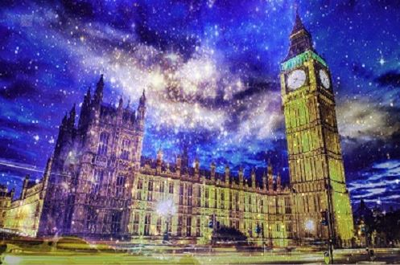

This type of art is known as a facet art. This art involves multiple shapes digitally drawn and combined together to form a piece of art that may depict people, animals or characters. This facet was created in Adobe Illustrator with a feature called the pen tool, a tool that allows artists to create drawings in their computers. It consists of colorful, triangular shapes combined together to form one piece of abstract digital art.

In this pencil drawing, the objects contain features that are circular and have various shades of colors. This piece of art shows how shades of color, lighting and the form of shapes may vary at different angles even though these objects are still.
This pixel art was created with a code typed in a computer program known as Processing. The method of using codes to create art shows how artists are able to provide instructions for a computer to process information that can be used to produce animation.
This type of art is known as a poly art. This is artwork that involves multiple polygons and triangles digitally drawn on a computer and combined together to form one piece. This poly art was created in Adobe Illustrator and combined with a photo of New York and a photo of a night sky in Adobe Photoshop. This is an example of how artists can create digital drawings with Illustrator and edit them in Photoshop.

This photo was taken with a Canon DSLR camera. It was edited in Adobe Lightroom, a program that artists may use to edit photos. I used Lightroom to edit my photo so that it could capture emotion by focusing more on my dog's eyes. Lightroom is a useful way for artists to edit photos and other digital images.

This pixel art of me was created after I used processing to type in code that allowed me to animate pictures I uploaded. This demonstrates how codes may be used to animate pictures of living beings such as people. Artists may use photography to capture beautiful objects, people or places they see in the real world and use processing to transform them into animations.

In this p5 animation, a circle is moving as many shapes circled around it. As the mouse moves left, right and towards the ends of the screen, this shape may change size and form. The mouse can control the movement of this animation. Click the link below to view the art.
AnimationThis image was edited in Adobe Photoshop. It depicts an image of Big Ben combined with an image of a beautiful night sky with many stars. Photoshop is a useful way for people to combine and edit multiple images.
This is a p5 net art of a 3D geometric shape that has been multiplied and moves back and forth. This is an example of how shapes can be manipulated with code so that artists can develop new ways to change their art's texture, speed and form. Click the link below to view the art.
Net ArtThis net art was generated by a code typed into a text editor known as Atom. This sketch is an animated butterfly that moves and changes color as the user clicks on it. This is an example of how people can use codes to use their imagination and develop ways to create interactive animations.